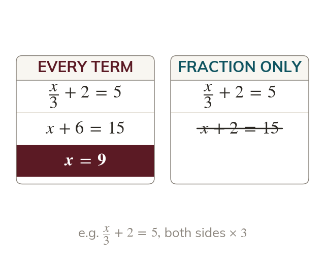

Clear every term
Multiplying by the denominator clears a fraction. Every term on both sides is multiplied.
Multiplying both sides by the denominator clears a fraction. Every term on both sides is multiplied, not just the fraction, or the equation stops balancing.